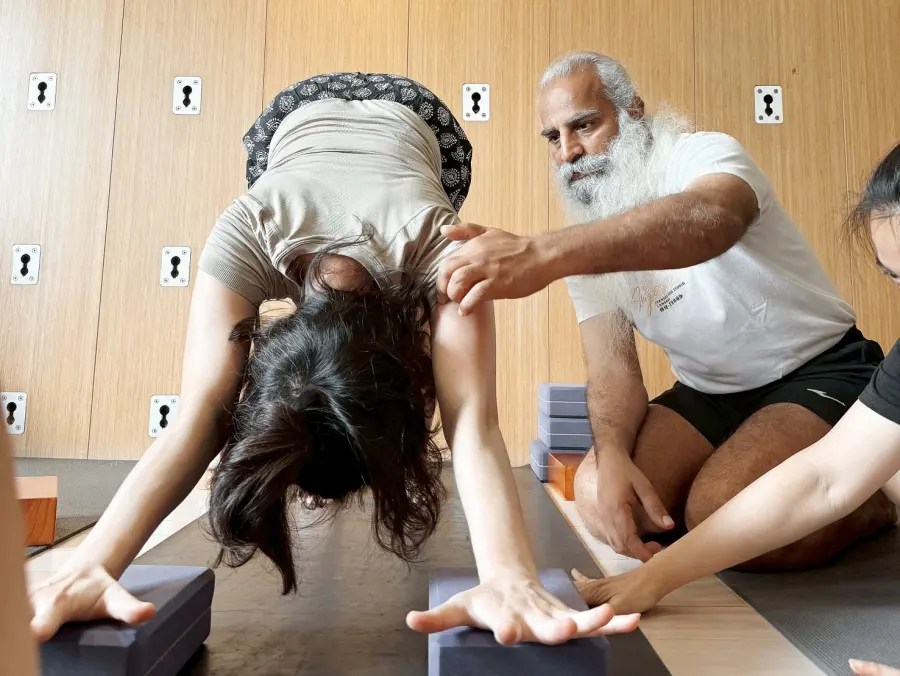

18–24 December 2026
Alba Wellness Valley, Hue
With Nandaji
Join the notification list
Request detailed information
Request detailed information
In daily life, practice gets cut into ten- and twenty-minute pieces, wedged between commuting, work, and errands. This time, we set aside a whole stretch of time for practice, uninterrupted.
Asana, pranayama, and meditation with Nandaji
Rest, hot springs, nature, and quiet solitude
Satsang: discussing the classical texts, the day's practice, and the questions still unresolved

Satsang is our shared learning time each evening. Starting from the Yoga Sutras, Nandaji connects asana, pranayama, and everyday life, and invites questions and discussion. The body gathers experience during the day; the evening's conversation helps make sense of it. The next morning, we return to practice with fresh eyes.
The natural setting at Alba Wellness Valley, with its hot springs and unhurried pace, gives each day a quiet, steady space to learn in. We are not in a rush to accumulate. Each practice, each rest, each conversation is given time to settle.

Teacher

Nandaji has devoted many years to yoga practice and teaching, including asana, pranayama, meditation, and yoga philosophy. He is able to translate teachings that may seem subtle or difficult into learning that students can experience directly.
Inquiry before answers: In class, he does not rush to give answers. Through repeated inquiry, he guides students to find understanding through their own body, breath, and practice.
A long-term relationship of practice: Many students continue studying with him not only to learn more asanas, but to gradually develop the ability to observe and understand themselves through repeated practice.
Bringing philosophy into daily life: Evening Satsang is an important part of learning. Nandaji brings together yoga texts, the day's practice, and questions from participants, so that yoga becomes not only class content, but a practice that continues into daily life.

Arrive in Hue, settle in
Hot springs, gentle meditation
Welcome gathering

06:00–10:00 Asana, pranayama, meditation
10:30
Hot springs, quiet time
Dinner, Satsang

06:00–10:00 Asana, pranayama, meditation
10:30
Free time
Dinner at your own arrangement in Hue

06:00–10:00 Asana, pranayama, meditation
10:30
Walking, personal meditation, forest bathing
Dinner, Satsang

06:00–10:00 Asana, pranayama, meditation
10:30
Hill walk (approx. 2 hours)
Dinner, Satsang

06:00–10:00 Asana, pranayama, meditation
10:30
Practice
Dinner, Satsang
06:00–09:00 Asana, pranayama, meditation
The course closes
Setting
The course takes place at Alba Wellness Valley in Hue, Vietnam.
The practice hall, dining area, hot springs, pool, and lodging all sit within the same grounds, so there is no need to move around each day. In the morning you can step outside and be at the practice hall within moments, and spend the afternoon in the springs or among the trees.
A setting like this lets seven days genuinely slow down.
 Pool & Nature
Pool & Nature
 Dining
Dining
 Hot Springs
Hot Springs
 Outdoor Hot Springs
Outdoor Hot Springs
 Natural Surroundings
Natural Surroundings
18–24 December 2026, seven days, at Alba Wellness Valley in Hue, Vietnam.
Places are limited. Leave your details and we'll send you the full information as soon as it's ready.
If you're interested, leave your email. We'll let you know as soon as registration opens — a few days ahead of the public announcement.
Request detailed information
We suggest at least three months of regular practice. If you're unsure whether it's right for you, do get in touch.
Asana, pranayama, and meditation each morning, and Satsang each evening.
Satsang is our shared learning and conversation each evening. Nandaji draws on the classical texts, the day's practice, and questions from the group. No background in yoga philosophy is needed.
Please tell us about any injuries or particular needs when you register. If you've had recent surgery, are in acute pain, or have a serious condition, we'd suggest checking with your doctor first, then talking it through with us.
Alba Wellness Valley is set in a natural environment. The practice hall, dining area, hot springs, and pool all sit within the same grounds, and guests can use the hot springs freely throughout their stay.
Yes. Many participants come on their own, and we're happy to help you with the arrangements.
Details are still being finalised. Leave your email and we'll send you the full information as soon as it's ready.
The main retreat is mainly vegetarian. If you have specific dietary needs, please let us know when you register.
Organizer
Zen Yuan Yoga Studio has taught Iyengar Yoga for many years. What matters to us is finding, slowly, the direction of practice that suits each different body.
These seven days take what we value in the studio — practice, observation, rest — and place them in a longer, more complete stretch of time.
This course is planned and taught by Zen Yuan Yoga Studio, with coordination support from Salamba Taiwan.
LINE: https://lin.ee/NJ3dhU3 ｜ Email: iyengar.course@gmail.com